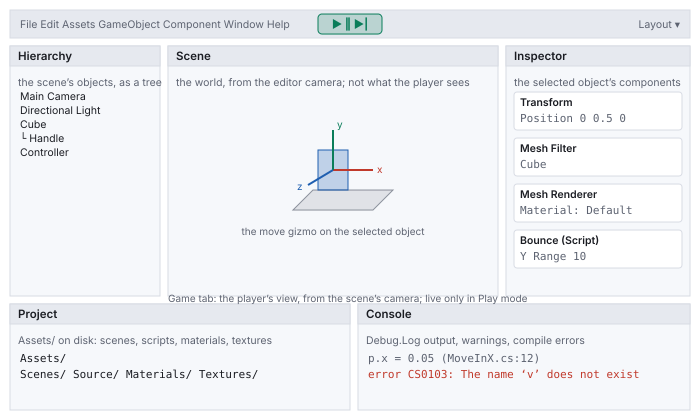
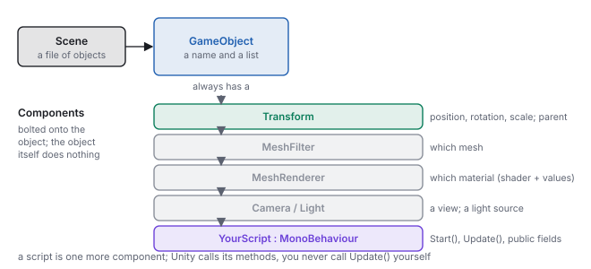
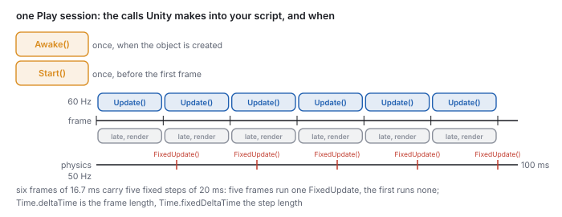
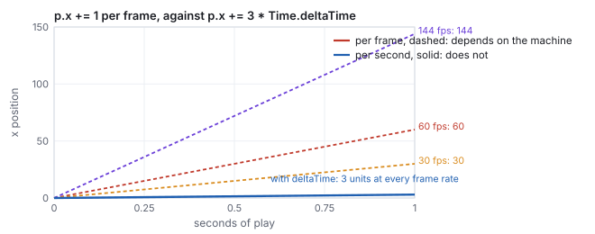
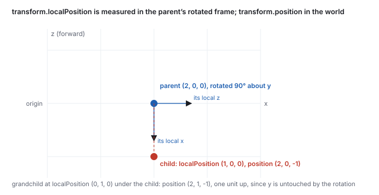
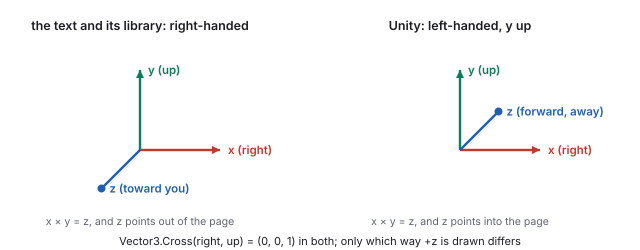
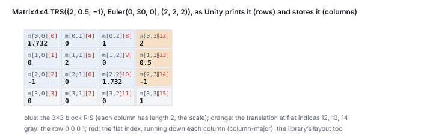

This chapter links to the course’s interactive demos and uses MathJax for its formulas. Read it through the course website (or download the file and open it in a browser); a Canvas inline preview will reach neither the demos nor the math. All chapters.
Vector3, Quaternion and Matrix4x4 do and how they map onto the text’s conventions, and how to open, run, read and debug a studio project. Read before the first studio; return to Sections 6 and 7 before the matrix and mesh studios.
The mathematics of this text is engine-independent. The practice is not: the studios and machine problems run in Unity, and they assume a working knowledge of the editor, the object model, the scripting lifecycle and the engine’s math types that no lecture has time to teach. This chapter is that knowledge, in the order the studios need it. It is not a Unity tutorial in the usual sense. It skips terrain, physics, audio, animation clips and everything else a game needs, and it goes deeper than a tutorial on the four things a graphics course needs: the transform hierarchy and what local and world mean in numbers, the frame loop and its two clocks, the matrix type and its storage, and the difference between the engine’s conventions and the text’s. The course rule, implement and replace, is stated at the end with the list of helpers it forbids and the primitives it allows.
Unity is installed through Unity Hub, a launcher that manages editor versions, licenses and projects. The course pins one editor version, Unity 6000.3.11f1 LTS, and every studio project was saved by it. Opening a project in a different version triggers an upgrade that rewrites project files, produces diffs that are not your work, and occasionally breaks a script; if Hub offers to open a project in a newer version, decline and install the pinned one from Installs. A personal license is free and sufficient. The editor download is several gigabytes; start it before the first studio, not during it.
A project is a folder. Everything the editor knows about it lives under Assets/ (your
scenes, scripts, materials, textures, in whatever subfolders you make) and
ProjectSettings/; the Library/ folder is a cache the editor rebuilds and
should never be shared or committed. The studio projects arrive as zip files on Canvas; unzip one,
add its folder in Hub under Projects, and open it. The first open of any project compiles its
scripts and imports its assets, which takes a minute and is normal.

Assets/ on disk. Double-click a script to open it in the external editor (Visual Studio, Rider or VS Code); double-click a scene to load it.Debug.Log output, warnings, and compile errors. A compile error anywhere in the project stops Play from starting; the Console names the file and line.MeshFilter names a mesh, a MeshRenderer
draws it with a material, a Camera or Light makes the object a viewpoint
or a light source, and a script is a component you write. Behavior lives in
components; the object is the bag they are attached to.

Two consequences shape every studio script. First, a script needs to know which object it is on
and which others it should touch: transform and gameObject are the
script’s own; GetComponent<T>() finds a sibling component on the same object;
and a public field of type GameObject, Transform or a script type is
filled by dragging in the Inspector. Second, the Inspector is the engine’s view of your model:
a public field is visible and editable there, and its Inspector value overrides the initializer in the
code. The studio projects use this constantly, and it is the first place to look when a value in the
code seems to have no effect.
A console program runs top to bottom and exits. An interactive program never returns: the engine
runs the loop of the rasterization chapter (read input, update
the state, draw) forever, and a script hooks the middle of it. The hooks are methods with fixed
names on a class deriving from MonoBehaviour.
using UnityEngine;
public class Bounce : MonoBehaviour {
public float yRange = 3f; // visible in the Inspector; its value there wins
public float speed = 2f;
private float dir = 1f; // private: not shown, not overridden
void Start() { // once, before the first frame this object is active
Debug.Log("Bounce on " + gameObject.name);
}
void Update() { // once per frame, whatever the frame rate
Vector3 p = transform.localPosition; // a copy (Vector3 is a struct)
p.y += dir * speed * Time.deltaTime; // rate times seconds: per-second motion
if (p.y > yRange || p.y < -yRange) dir = -dir;
transform.localPosition = p; // write the copy back, or nothing moves
}
}

Awake and Start run once; Update runs every frame at whatever rate the machine achieves; FixedUpdate runs on its own fixed clock, 50 times a second by default, and the two do not line up.Awake() runs when the object is created, before any Start; use it for
the object’s own setup. Start() runs once before the object’s first
Update; use it for setup that needs other objects. Update() runs once per
rendered frame; LateUpdate() runs after every object’s Update (a
camera that follows a character reads the character’s final position here);
FixedUpdate() runs on the physics clock, every Time.fixedDeltaTime seconds
(0.02 by default), zero or more times per frame; OnDestroy() runs when the object is
removed. Unity calls them by name, and a misspelled update() is simply never called,
with no error.
p.x += 1f in Update moves one unit every frame: 60
units per second on a 60 Hz machine, 30 on a 30 Hz one, 144 on a fast monitor. The same script with
p.x += 3f * Time.deltaTime moves 0.05 per frame at 60 Hz, 0.1 at 30 Hz and 0.0208 at
144 Hz, and after one second it has moved 3 units on all three. Time.deltaTime is the
length of the last frame in seconds; a rate multiplied by it is a step in units, and the motion is
the same on every machine. The studio’s first poke removes the multiplication so that the
difference can be seen.

FixedUpdate calls, and the
pattern repeats every 100 ms. Anything physical (forces, rigid bodies) belongs in
FixedUpdate so that its step is constant; everything visual belongs in
Update. This is the accumulator of the interactive-systems
chapter, built into the engine.
Unity scripts are C#, and a programmer who knows Java or C++ can read them at once. The differences that matter for the studios fit in one table; the one that causes bugs is the last row.
| you write | it means | note |
|---|---|---|
public float speed = 2f; | a public field | shown in the Inspector; the f suffix makes a float literal, since 2.0 alone is a double and will not assign |
[SerializeField] private int n; | a private field still shown in the Inspector | the studio code uses public fields; either works |
var v = new Vector3(1, 2, 3); | local type inference | as in modern Java and C++; the type is still fixed at compile time |
foreach (var c in list) | iterate | Java’s for-each; List<T> is System.Collections.Generic |
void M(ref Matrix4x4 m) | pass by reference | the caller writes M(ref x); the studios’ scene-graph code passes matrices this way to avoid copies |
GetComponent<Renderer>() | a generic method call | the angle brackets name the component type wanted |
transform.localPosition.x = 1; | a compile error | Vector3 is a struct, a value type: the property returns a copy, and assigning into a copy is refused. Read into a local, change it, write it back. |
Vector3, Quaternion, Matrix4x4 and Color are
structs; GameObject, Transform, Mesh and every component are
classes. Assigning a struct copies it; assigning a class copies a reference. So
Vector3 p = transform.localPosition; p.x += 1; changes nothing on screen until
transform.localPosition = p;, while Transform t = other.transform; t.localPosition = ...
moves the other object immediately. The same rule explains why mesh.vertices[0] = v
does nothing: the vertices property returns a fresh copy of the array each time, and
the studio code that builds meshes therefore fills a local array and assigns the whole array once
(the meshes chapter shows the pattern).
localPosition, localRotation (a Quaternion) and
localScale are the node’s transform relative to its parent, the \(L\) of
the scene-graph chapter, composed as
\(T\,R\,S\) in that order; localEulerAngles is the same rotation as three angles.
position, rotation and lossyScale are the world values,
read from the composite \(W = W_{\text{parent}}\,L\); setting position solves for the
localPosition that produces it. parent is the link up the tree, and
SetParent(p, true) reparents while keeping the world pose. For an object at the root
the local and world values coincide.

localPosition = (2, 0, 0), localEulerAngles = (0, 90, 0), scale 1.
Child: localPosition = (1, 0, 0). Grandchild under the child:
localPosition = (0, 1, 0). The rotation chapter’s \(R_y(90^\circ)\) sends
\((1, 0, 0)\) to \((0, 0, -1)\), so the child’s world position is
\((2, 0, 0) + (0, 0, -1) = (2, 0, -1)\), and the grandchild’s is \((2, 1, -1)\), one unit up,
since a rotation about \(y\) leaves \(y\) alone. The engine reports exactly these as
child.transform.position and grandchild.transform.position, and
parent.transform.TransformPoint(new Vector3(1, 0, 0)) returns \((2, 0, -1)\) as well:
TransformPoint is \(W\) applied to a point, TransformDirection is its
rotation applied to a vector (no translation), and the Inverse forms go the other way.
The child’s own transform.forward, its local \(+z\) in world coordinates, is
\((1, 0, 0)\).
Two facts about scale. A non-uniform scale on a parent shears a rotated child, which is why the
engine exposes lossyScale rather than a true world scale and why
the scene-graph chapter warns against scaling anything but leaves.
And localScale scales about the object’s own origin, which for an imported mesh is
wherever the modeler put it; the studios’ pivot sandwich (the
affine chapter) exists because the mesh origin and the desired pivot rarely coincide.
Unity’s Vector3, Quaternion and Matrix4x4 are the
objects of the vectors, rotation and
affine chapters with a few differences of convention. All the
algebra transfers; three conventions need naming.

Vector3.Cross(right, up)
returns \((0, 0, 1)\), exactly the component formula of the vectors chapter; Unity names that
vector forward. A positive rotation about an axis is clockwise when looking along the
axis in Unity and counter-clockwise in the text, but the matrices and quaternions are the same
numbers: Quaternion.AngleAxis(90, Vector3.up) applied to forward gives
right, \((1, 0, 0)\), and the rotation chapter’s \(R_y(90^\circ)\) applied to
\((0, 0, 1)\) gives \((1, 0, 0)\) too. A formula written in the text runs unchanged in a script; a
picture drawn from the text must be mirrored in \(z\) to match the Scene view.
| the text | Unity | note |
|---|---|---|
| \(\mathbf{a}\cdot\mathbf{b}\), \(\mathbf{a}\times\mathbf{b}\), \(|\mathbf{a}|\), \(\hat{\mathbf{a}}\) | Vector3.Dot(a, b), Vector3.Cross(a, b), a.magnitude, a.normalized | a.sqrMagnitude avoids the square root; Vector3.Angle is the arccos of the dot in degrees |
| \((x, y, z, w)\) unit quaternion | Quaternion with fields x, y, z, w | same component order as quatFromAxisAngle; Quaternion.AngleAxis(deg, axis) builds one, q * v rotates a vector, q1 * q2 composes (\(q_2\) first), Quaternion.Slerp is the rotation chapter’s slerp |
| Euler angles, engine-dependent order | Quaternion.Euler(x, y, z), localEulerAngles | applied as \(R_y R_x R_z\) (the \(z\) rotation first); the rotation chapter works the same triple in three conventions |
| a \(4\times4\) affine matrix, column-major array | Matrix4x4, m[row, col], flat m[i] | column-major like the library; Matrix4x4.TRS(t, q, s) is \(T R S\); m.MultiplyPoint(p) applies \(M\) to a point with the divide, MultiplyPoint3x4 without, MultiplyVector ignores translation; m.inverse, m.transpose; GetColumn(3) is the translation |
| degrees in \(\sin\), \(\cos\) | Mathf.Sin(Mathf.Deg2Rad * deg) | Mathf works in radians; Mathf.Deg2Rad and Rad2Deg convert |
| \(P\) of the viewing chapter | Matrix4x4.Perspective(fovY, aspect, near, far) | same entries as the library’s perspective; Camera.projectionMatrix holds it, worldToCameraMatrix holds \(V\) |

Matrix4x4 two ways: indexed m[row, col] as the engine prints it, and by the flat index m[i] that runs down the columns. The translation sits at flat indices 12, 13, 14.Matrix4x4.TRS(new Vector3(2, 0.5f, -1), Quaternion.Euler(0, 30, 0), Vector3.one * 2) has
rows \((1.732, 0, 1, 2)\), \((0, 2, 0, 0.5)\), \((-1, 0, 1.732, -1)\), \((0, 0, 0, 1)\). The first three
columns are \(R_y(30^\circ)\) scaled by 2: column 0 is \((1.732, 0, -1)\), of length 2, where the
rotated \(x\) axis went; column 3 is the translation. m[0, 3] is 2 and so is
m[12]: the flat index is column times 4 plus row, exactly the layout of the course
library’s 16-element arrays, so a matrix printed by node from
makeTRS(2, 0.5, -1, 0, 30, 0, 2, 2, 2) lists the same sixteen numbers in the same
order. The read-back of the affine chapter recovers the
scale as the column lengths and the rotation as the normalized columns.
Mesh. A Mesh object holds the arrays of the
meshes chapter: vertices (Vector3[]), triangles
(int[], three per triangle, clockwise seen from the front in Unity’s left-handed
convention), normals, uv (Vector2[]). A MeshFilter
holds the mesh and a MeshRenderer draws it. Build by filling local arrays and assigning
each whole array once; RecalculateNormals() computes the averaged normals the chapter
derives by hand, and the studio projects compute them by hand instead, which is the point.
Material and texture. A material is a shader plus the values of its properties; the
same shader with different values is a different material. renderer.material returns
a per-object copy (editing it affects one object), sharedMaterial the asset itself. A
texture is an image asset; drop it into the Assets folder and Unity imports it, and the
material’s main texture slot takes it. The shader chapter covers
what the material feeds to the shader and how a script sets properties from code.
Prefab. A prefab is a saved GameObject (with its components and children) that can
be instantiated any number of times: Instantiate(prefab, position, rotation) returns a
new copy, and Destroy(obj) removes one at the end of the frame. The studios’
vertex handles are instantiated sphere prefabs, one per vertex.
Camera and light. The scene’s camera is a GameObject with a Camera
component; its Transform is the eye and its fields (fieldOfView, aspect,
nearClipPlane, farClipPlane, orthographic) are the parameters of
the viewing chapter. Camera.main finds the one
tagged MainCamera; ScreenPointToRay(Input.mousePosition) is the unprojection of
the interactive-systems chapter. A Light
component makes its object a directional, point or spot light with a color and an intensity; the
studio shaders ignore the engine’s lighting and read the light’s transform themselves.
The studio projects use the classic input API: Input.GetKey(KeyCode.W) is true while a
key is held, GetKeyDown on the frame it was pressed, Input.GetMouseButton(0)
for the left button, Input.mousePosition for the pointer in window pixels (origin at the
bottom left), and Input.GetAxis("Mouse X") for the pointer’s motion this frame.
Unity 6 also ships the newer Input System package; the studio code does not use it, and a project
set to one API silently ignores the other.
User interface elements (sliders, buttons, toggles) live on a Canvas object and are
wired to scripts by events: a Slider’s onValueChanged.AddListener(handler)
calls the handler with the new value. The first studio’s projects are built this way, and the
pattern is the controller of model-view-controller: the handler
writes the model, and the views read it on the next frame.
Drawing a line or a point for debugging needs no mesh. Debug.DrawLine(a, b, Color.red)
draws a segment in the Scene view for one frame (call it every Update);
Debug.DrawRay(origin, dir) likewise; Gizmos.DrawSphere inside an
OnDrawGizmos() method draws in the editor even when not playing. The vector studios use
line-renderer prefabs for the same purpose so the lines appear in the Game view too.
Every studio project follows one layout: a single scene under Assets/Scenes, scripts
under Assets/Source (sometimes split into Model, UI Support,
Prefab Support), and a MainController script on an object named
Controller that wires the UI and owns the world. The reading order that works:
Controller and read its Inspector: the public fields are the model’s parameters and the references to the objects it drives.MainController.cs. Start is the wiring (the AddListener calls); Update is the per-frame work; the handlers are the controller of MVC.The projects are Kelvin Sung’s CSS 451 class examples, written for teaching rather than for shipping: names are explicit, helpers are avoided on purpose, and the comments say what the code is for. Where a project’s convention differs from the lecture’s (a quad split along the other diagonal, a matrix built from rows rather than columns), the studio page says so, and both are correct.
| allowed primitives | off limits, per the assignment | what to build instead |
|---|---|---|
Vector3.Dot, Vector3.Cross, .magnitude, .normalized, component access | Transform.LookAt, Quaternion.LookRotation | the look-at basis of the viewing chapter from three cross products |
Matrix4x4.TRS, Translate, Rotate, Scale, matrix products, SetRow, SetColumn | Matrix4x4.LookAt, Matrix4x4.Perspective when the assignment names them | \(V\) and \(P\) entry by entry, as the viewing chapter does |
Quaternion.AngleAxis, quaternion products | Quaternion.Slerp, RotateTowards when named | slerp from the rotation chapter’s formula |
filling Mesh.vertices, triangles, uv | Mesh.RecalculateNormals, primitive geometries when named | face and vertex normals from cross products (the meshes chapter) |
Shader.SetGlobalMatrix, Material.SetMatrix | the engine’s automatic transform when named | your own matrix uploaded to your own shader (the shader chapter) |
Each assignment’s write-up on Canvas is the authority on which helpers it forbids. The habit the rule builds is the one the text is written for: to know what the helper does, and to be able to say, with a number, whether it did it.
node from the
css551/ directory.
MoveInX.cs script of the first project,
replace the body of Update with the single line
transform.localPosition.x += 1.0f * Time.smoothDeltaTime; and save. Expected: the
Console shows error CS1612: Cannot modify the return value of 'Transform.localPosition'
because it is not a variable, and Play refuses to start. Restore the three-line form
(read, modify, write back).
BounceUpAndDown.cs, change the initializer
public float yRange = 10f; to 3f, save, and Play. Expected: the bounce
range does not change, because the Inspector still holds 10. Select the object, read the field
in the Inspector, set it to 3 there, and Play again.
Start prints transform.position. Expected Console line:
(2.0, 1.0, -1.0). The same numbers from the course library:
node -e "import('./lib/core/xform.js').then(x=>{const P=x.makeTRS(2,0,0,0,90,0,1,1,1),C=x.makeTRS(1,0,0,0,0,0,1,1,1),G=x.makeTRS(0,1,0,0,0,0,1,1,1);const W=x.matMul(x.matMul(P,C),G);console.log([W[12],W[13],W[14]].map(v=>+v.toFixed(3)))})"
[ 2, 1, -1 ]
Debug.Log(Matrix4x4.TRS(new Vector3(2, 0.5f, -1), Quaternion.Euler(0, 30, 0), Vector3.one * 2)),
which Unity prints as four rows:
node -e "import('./lib/core/xform.js').then(x=>{const m=x.makeTRS(2,0.5,-1,0,30,0,2,2,2);for(let r=0;r<4;r++)console.log([m[r],m[4+r],m[8+r],m[12+r]].map(v=>+v.toFixed(3)))})"
[ 1.732, 0, 1, 2 ]
[ 0, 2, 0, 0.5 ]
[ -1, 0, 1.732, -1 ]
[ 0, 0, 0, 1 ]
The engine’s printout has the same four rows to five decimals.
Update. On a machine that renders 90 frames per second, how far does it move per frame, and how many frames until it has moved 5 units?
FixedUpdate calls happen per second, and what is the largest number of frames in a row with none?
transform.forward?
Vector3.Cross(Vector3.forward, Vector3.up) is computed. What is it, and which named direction is that in Unity?
Vector3.left. The formula is the vectors chapter’s; the name is Unity’s.
Quaternion.Euler(30, 0, 0) and Quaternion.Euler(0, 0, 30) are applied to Vector3.forward. Which one moves it?
public Transform target; and, in Update, does Vector3 p = target.position; p.y = 0;. Does the target move?
target is a reference (a class), but position returns a struct copy; changing p changes the copy. Add target.position = p; and it moves.
Transform.LookAt. Using allowed primitives, write the three lines that compute a camera’s right, up and backward axes from its position and a target, and say what to check them against.
Vector3 w = (eye - at).normalized; Vector3 u = Vector3.Cross(Vector3.up, w).normalized; Vector3 v = Vector3.Cross(w, u);, the basis of the viewing chapter. Check: call transform.LookAt(at) on a scratch object and compare its right, up and -forward with \(u\), \(v\), \(w\); they should agree to float precision.
Update prints Time.deltaTime for the first five frames only, and run it. What do the numbers look like, and why is the first one different?
Update, gating a Debug.Log. Typical output: one larger value (the first frame includes scene setup and shader compilation, often 30 to 100 ms), then values near 16.7 ms on a 60 Hz display. Motion code multiplies by this value precisely so that the long first frame produces a proportionally larger step rather than a stall.
Matrix4x4.TRS(new Vector3(1, 2, 3), Quaternion.Euler(0, 0, 90), Vector3.one) and identify the four columns by what they are.